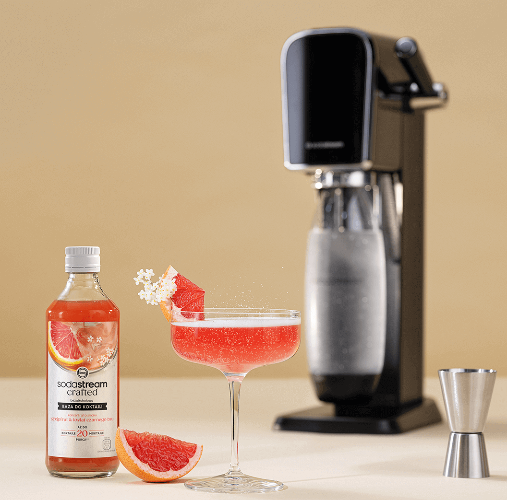
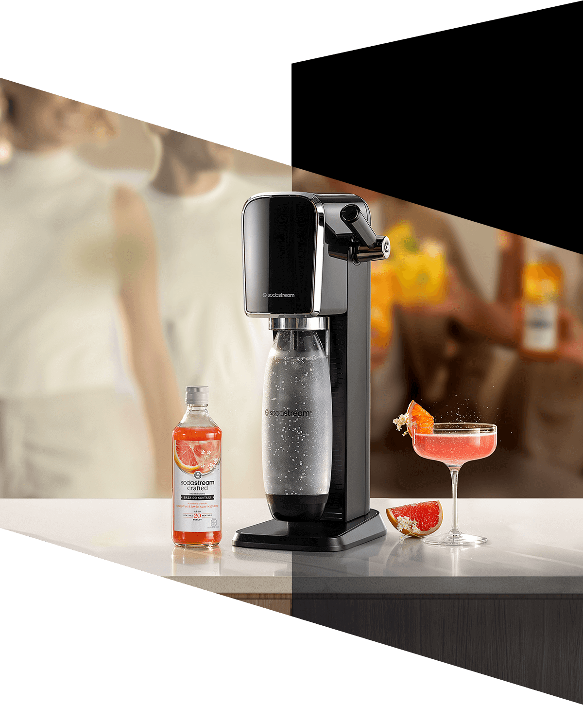
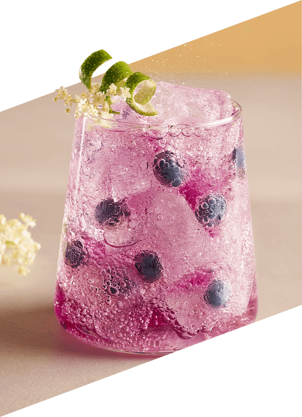
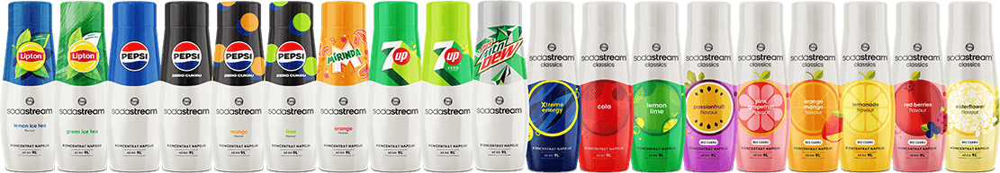

<!DOCTYPE html>
<html lang="pl">
  <head>
    <meta charset="UTF-8" />
    <meta name="viewport" content="width=device-width, initial-scale=1.0" />
    <link rel="stylesheet" href="./style.css" />
    <title>New Syrup</title>
  </head>
  <body>
    <div class="es-rc" id="es-rc-content">
      <div class="es-kv">
        <div class="es-kv__packshot">
          
        </div>

        <div class="es-kv__title-group">
          <div class="es-kv__logo">
            
          </div>
          <div class="es-kv__title--small">Baza do koktajli o smaku</div>
          <h2 class="es-kv__title">Grejpfrut & <br />Kwiat Czarnego Bzu</h2>
          <p class="es-kv__subtitle">
            Wyrafinowana kompozycja smaków rześkiego grejpfruta i romantycznych
            kwiatów czarnego bzu oczaruje Twoich gości
          </p>
        </div>

        <p class="es-kv__text">
          Odkryj na&nbsp;nowo smak wiosennego bzu z&nbsp;syropem SodaStream!
          Wystarczy zimna woda z&nbsp;kranu, syrop SodaStream i&nbsp;Twój
          ulubiony saturator do&nbsp;wody gazowanej, aby w&nbsp;mgnieniu oka
          stworzyć pyszne, orzeźwiające bąbelki. Zapomnij o&nbsp;dźwiganiu
          ciężkich butelek - z&nbsp;SodaStream napój o&nbsp;smaku Kwiat Czarnego
          Bzu jest zawsze pod ręką!
        </p>
      </div>

      <div class="es-info">
        
        <h2 class="es-info__title es-title">
          Perfekcyjne<br />
          koktajle i moktajle<br />
          na 1, 2, tssst!
        </h2>
        <p class="es-info__text">
          <b>Wyobraź sobie...</b>
          <br /><br />
          <b>...poranek na tarasie.</b> Słońce ledwo wzeszło, a Ty już cieszysz
          się chłodnym moktajlem z grejpfruta i czarnego bzu. Energia na cały
          dzień gwarantowana! <br /><br />
          <b>...romantyczny wieczór. </b>Zmysłowy aromat grejpfruta i czarnego
          bzu w połączeniu z alkoholem stworzy niepowtarzalny klimat.
        </p>
      </div>

      <div class="es-possibilities">
        <h2 class="es-possibilities__title">Orzeźwiające w dzień</h2>
        <h2 class="es-possibilities__title">wyrafinowane nocą!</h2>
        
        <div class="es-possibilities__content">
          
          <p class="es-possibilities__title">
            Z bazą SodaStream Crafted Grejpfrut & Kwiat Czarnego Bzu każda
            chwila smakuje wyjątkowo!
          </p>
          <p class="es-possibilities__text">
            Z SodaStream Crafted możesz wszystko! Wystarczy dodać wodę gazowaną
            i puścić wodze fantazji. Wyobraź sobie popołudnie z przyjaciółmi.
            Śmiech, rozmowy i orzeźwiające napoje z SodaStream. Wasz sekretny
            przepis na udane spotkanie? Grejpfrut, czarny bez i szczypta dobrego
            humoru!
          </p>
          <p class="es-possibilities__subtitle">Piękno tkwi w prostocie</p>
        </div>
      </div>

      <div class="es-day-night"></div>

      <div class="es-triple">
        <h2 class="es-triple__title">
          zabąbelkuj, dodaj syrop i&nbsp;gotowe!<br />
        </h2>
        <div class="es-triple__wrapper">
          <div class="es-triple__single">
            
            <p class="es-triple__desc es-triple__desc--side">gazuj</p>
          </div>
          <div class="es-triple__single">
            
            <p class="es-triple__desc es-triple__desc--center">miksuj</p>
          </div>
          <div class="es-triple__single">
            
            <p class="es-triple__desc es-triple__desc--side">smakuj</p>
          </div>
        </div>
      </div>

      <div class="es-recipes">
        <div class="es-recipes__day-night">
          <h3 class="es-recipes__day-night-title">
            Stwórz idealnie musującą wodę i pyszne napoje, dopasowane do Twojego
            gustu.
          </h3>
          <p class="es-recipes__day-night-description">
            Kontroluj poziom bąbelków i słodyczy, eksperymentuj ze smakami i
            ciesz się świeżością w każdej chwili.
          </p>
          <p class="es-recipes__day-night-label">Day</p>
          
          <div class="es-recipes__day-night-recipe-content">
            <p class="es-recipes__day-night-recipe-content-title--small">
              Moktajl:
            </p>
            <p class="es-recipes__day-recipe-content-title">
              Blueberry <br />Elderflower Fizz
            </p>
            <p><b>Składniki:</b><br /></p>
            <ul class="es-recipes__day-night-recipe-content-ingredients-list">
              <li>20 ml bazy SodaStream Grejpfrut & Kwiat Czarnego Bzu</li>
              <li>70 ml wody gazowanej SodaStream</li>
              <li>10 ml musu jagodowego</li>
              <li>20 ml soku z cytryny</li>
              <li>Kostki lodu</li>
            </ul>

            <p><b>Dekoracja: </b></p>
            Skórka limonki, kwiat czarnego bzu <br />
            <br />

            <p><b>Przygotowanie:</b></p>
            <ol class="es-recipes__day-night-recipe-content-ingredients-list">
              <li>
                W niskiej, pękatej szklance umieść borówki i kilka kostek lodu.
              </li>
              <li>
                Do szklanki dodaj 10 ml musu jagodowego, 20 ml soku z cytryny i
                20 ml bazy SodaStream Crafted Grejprut & Kwiat Czarnego Bzu.
              </li>
              <li>Uzupełnij wodą gazowaną.</li>
              <li>
                Delikatnie wymieszaj napój łyżką barmańską i udekoruj kwiatami
                czarnego bzu i skórką z limonki.
              </li>
            </ol>
          </div>
        </div>
        <div class="es-recipes__day-night">
          <p class="es-recipes__day-night-label">Night</p>
          
          <div class="es-recipes__day-night-recipe-content">
            <div class="polygon"></div>
            <p class="es-recipes__day-night-recipe-content-title--small">
              Koktajl:
            </p>
            <p class="es-recipes__day-recipe-content-title">
              Elderflower <br />Prosecco Spritz
            </p>
            <p><b>Składniki:</b><br /></p>
            <ul class="es-recipes__day-night-recipe-content-ingredients-list">
              <li>70 ml bazy SodaStream Grejpfrut & Kwiat Czarnego Bzu</li>
              <li>20 ml wody gazowanej SodaStream</li>
              <li>70 ml Prosecco</li>
              <li>20 ml soku z limonki</li>
              <li>Kostki lodu</li>
            </ul>

            <p><b>Dekoracja: </b></p>
            Kwiat czarnego bzu, kawałek grejpfruta <br />
            <br />

            <p><b>Przygotowanie:</b></p>
            <ol class="es-recipes__day-night-recipe-content-ingredients-list">
              <li>
                W niskiej, pękatej szklance umieść borówki i kilka kostek lodu.
              </li>
              <li>
                Do szklanki dodaj 10 ml musu jagodowego, 20 ml soku z cytryny i
                20 ml bazy
              </li>
              <li>SodaStream Crafted Grejprut & Kwiat Czarnego Bzu.</li>
              <li>Uzupełnij wodą gazowaną.</li>
              <li>
                Delikatnie wymieszaj napój łyżką barmańską i udekoruj kwiatami
                czarnego bzu i skórką z limonki.
              </li>
            </ol>
          </div>
        </div>
      </div>

      <div class="es-lemonade">
        <p class="es-lemonade__text">
          Wypróbuj inne syropy SodaStream! Owoce Leśne, Marakuję, Pepsi Lime
          Zero Cukru i&nbsp;Pepsi Mango Zero Cukru. A&nbsp;może klasyczne Pepsi,
          Mirinda i&nbsp;orzeźwiającą Lemoniadę? Odkryj bogactwo smaków
          i&nbsp;poczuj moc bąbelków z&nbsp;saturatorem SodaStream!
        </p>
      </div>

      <div class="es-video">
        <h2 class="es-video__title">SodaStream Crafted</h2>
        <p class="es-video__subtitle">Miksologia w Twojej kuchni!</p>
        <p class="es-triple__text">
          Zamień swoją kuchnię w przestrzeń pełną smakowych możliwości! Twórz
          orzeźwiające moktajle i lemoniady na dzień, a wieczorem zaskocz
          wszystkich wyrafinowanymi koktajlami. Uzupełnione ginem lub dowolnym
          alkoholem, napoje z SodaStream Crafted nabierają temperamentu i
          doskonale sprawdzą się na garden party, grillu, spotkaniu z
          przyjaciółmi czy nocnej imprezie.
        </p>
        <div class="es-video__container">
          <iframe
            loading="lazy"
            class="es-video__iframe"
            title="preference video"
            width="100%"
            height="auto"
            src="https://www.youtube.com/embed/JJeQbQmPSbM?si=7Ky0xnphFwcnPX48"
            allow="accelerometer; encrypted-media; gyroscope; picture-in-picture"
            allowfullscreen
          ></iframe>
        </div>
        <h2 class="es-video__subtitle es-title">
          Jedna SodaStream – wiele możliwości
        </h2>
        <p class="es-video__text">
          Odkryj bogactwo smaków z SodaStream! Wybieraj spośród klasycznych
          propozycji jak Pepsi, Mirinda, Cola lub stwórz orzeźwiające napoje
          owocowe, także w wersji bez dodatku cukru. To Ty decydujesz, co
          znajdzie się w Twojej szklance!
        </p>
      </div>

      <div class="es-photo">
        
        <p class="es-photo__text es-title">
          Kreuj Smaki. Twórz Niezapomniane Chwile.
        </p>
      </div>
    </div>
  </body>
</html>
